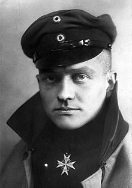
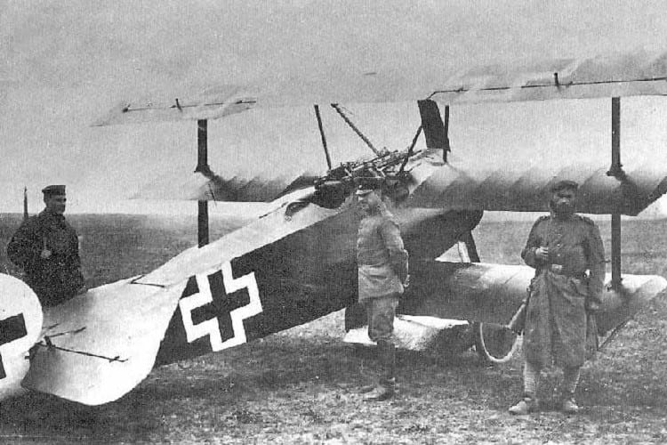
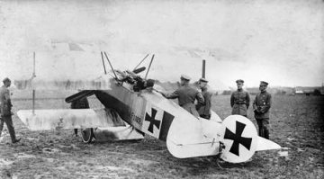
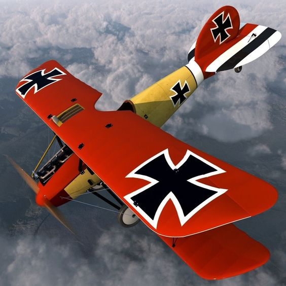
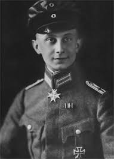

Manfred Albrecht Freiherr von Richthofen
Manfred von Richthofen was born on May 2, 1892 in Breslau, Germany
His father was a major in the Germany army and it was understood since
Manfred was a boy that he would also enter the army.
As a child,manfred loved all sorts of athletics and hunting.
excelled in sports far more than schoolwork.

Manfred Albrecht Freiherr von Richthofen
When Manfred was eleven years old he entered the Wahlstatt military school in Berlin, Germany. There he trained to be an officer in the German army. He was an excellent horseman and, when he graduated, he joined the German cavalry in 1911. Within a year Manfred was promoted to lieutenant.
Manfred von Richthofen’s combat aircraft.
Manfred really wanted to be more involved in the war.

So he volunteered to work as an observer on a plane scanning missions.
He flew along with pilots spotting enemy troops,
Reading maps,and using his machine gun To shoot at enemy

His plane was called baron after him
Manfred became very famous on both sides of the war and was one of the top war heroes in Germany. The British called him the Red Baron and he is still most widely known by this name. The Allies wanted to shoot down the Red Baron in order to help break the morale of the German people.

very famous on both sides of the war and was one of the top war heroes in Germany. The British called him the Red Baron and he is still most widely known by this name. The Allies wanted to shoot down the Red Baron in order to help break the morale of the German people.
Manfred got shot down and killed
On April 21,1918 he was only 25 years old.
He had been chasing a British fighter pilot
When he was hit by a bullet.
He managed to land the plane
But soon died from the bullet.
He was buried in france
By the Allies with a full military
Funeral

He died in Morlancourt Ridge,France
Born 2 may 1892
Died April 21 1918